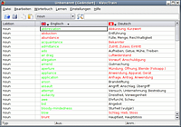
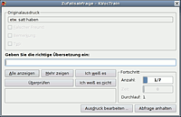
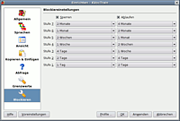

KVocTrain
Archivierte Anleitung
Dieser Artikel wurde archiviert, da er - oder Teile daraus - nur noch unter einer älteren Ubuntu-Version nutzbar ist. Diese Anleitung wird vom Wiki-Team weder auf Richtigkeit überprüft noch anderweitig gepflegt. Zusätzlich wurde der Artikel für weitere Änderungen gesperrt.
Anmerkung: Mit Parley steht aber eine Alternative zur Verfügung.
Zum Verständnis dieses Artikels sind folgende Seiten hilfreich:
KVocTrain ist ein umfassender Vokabeltrainer, welcher das Wörterlernen nach dem Leitner-System  organisiert. Dieser Vokabeltrainer ist sehr umfangreich und bietet eine Vielzahl von Einstellungsmöglichkeiten, was die Erstellung von Wörterlisten und das Lernen betrifft. KVocTrain beachtet dabei das Prinzip, dass die Zeiträume, zwischen denen erfolgreich gelernte Wörter abgefragt werden, immer größer werden sollen. Leider wird das Projekt nicht mehr unterstützt. Als Alternative bietet sich das Nachfolgeprojekt Parley an.
organisiert. Dieser Vokabeltrainer ist sehr umfangreich und bietet eine Vielzahl von Einstellungsmöglichkeiten, was die Erstellung von Wörterlisten und das Lernen betrifft. KVocTrain beachtet dabei das Prinzip, dass die Zeiträume, zwischen denen erfolgreich gelernte Wörter abgefragt werden, immer größer werden sollen. Leider wird das Projekt nicht mehr unterstützt. Als Alternative bietet sich das Nachfolgeprojekt Parley an.
Installation¶
Folgendes Paket muss installiert [1] werden:
kvoctrain (backports, Nur bis Hardy)
 mit apturl
mit apturl
Paketliste zum Kopieren:
sudo apt-get install kvoctrain
sudo aptitude install kvoctrain
Das Programm kann über "Anwendungen -> Bildung -> KVocTrain" gestartet werden.
KVocTrain einrichten¶
Menüsprache umstellen¶
Im Menü unter "System -> Systemverwaltung/Administration -> Sprachunterstützung" die Standardsprache auf die gewünschte Sprache einstellen (falls nicht schon gemacht). Anschließend sollte KVocTrain in der eigenen Muttersprache zu nutzen sein.
Sprachen einrichten in KVocTrain¶
"Einstellungen -> KVocTrain einrichten -> Sprachen": Alle gewünschten Sprachen, inklusive Muttersprache hinzufügen (falls notwendig).
"Wörterbuch -> Sprachen hinzufügen": Allenfalls alle gewünschten Sprachen auflisten.
"Wörterbuch -> Sprachen einstellen": Einstellen, welches die Originalsprache ist und welches die Übersetzung. Es ist möglich mehrere Übersetzungen in einer Tabelle parallel zu nutzen. Ob man lieber pro Datei nur eine Sprache haben möchte, hängt vom persönlichen Lernstil ab. Verschiedene Spaltenbreiten müssen von Hand angepasst werden.
Lektionen erfassen¶
Es empfiehlt sich gut zu überlegen, wie Wörterlisten angelegt werden sollen. Man kann natürlich eine einzige Einheitsliste bilden, welche ständig größer wird. Möglich ist aber auch, Lektionen nach Themen zu organisieren, z.B.: Nomen, Verben, Redewendungen, usw.

Wörter erfassen¶
Wenn man eine Lektion geöffnet hat, muss man in der Werkzeugleiste noch einmal die gewünschte Lektion anwählen. Dieser Eintrag erscheint in der ersten Spalte. In der dritten Spalte wird nun das neue Wort mit der Taste "insert" erfasst. Mit Eingabetaste oder Tabulator folgt die Übersetzung. Abgeschlossen wird der Vorgang durch Drücken der Eingabetaste. Dies ist wichtig, da sonst das letzte Wort nicht gespeichert wird.

Lernen¶
Datei öffnen.
"Einstellungen -> KVocTrain einrichten -> Grenzwerte": Die nun zu lernenden Lektionen auswählen.
"Lernen": Die Lernrichtung (Original - Übersetzung oder umgekehrt) bestimmen und die Art der Abfrage wählen.
In der Option "Zufallsabfrage" sind wiederum einige Möglichkeiten gegeben, wie man antworten möchte.

Lernbedingungen definieren¶
"Einstellungen -> KVocTrain einrichten -> Ansicht": Die Farben wählen, in welchen die schon gelernten Wörter, je nach Stufe, dargestellt werden.
"Einstellungen -> KvocTrain einrichten -> Abfrage": Die Bedingungen wie Zeitfaktor, Lernmethoden, usw. bestimmen.
"Einstellungen -> KvocTrain einrichten -> Blockieren": Die Sperrfristen einstellen, wie lange ein einzelnes Wort nicht mehr abgefragt wird. Dies wird dann wirksam, wenn man das Wort jeweils beim ersten Lerndurchgang gewusst hat. Es geht in die nächste Stufe und bleibt um die definierte Zeitspanne gesperrt. Dies ist besonders wertvoll, da die Wörter nicht durch zu kurzfristiges Repetieren bloß im Kurzzeitgedächtnis hängen bleiben. Diese Funktion ist für jede Lernrichtung einzeln wirksam. So kann beispielsweise ein Wort Deutsch - Englisch gesperrt sein, aber in der anderen Richtung, Englisch - Deutsch, dennoch freigegeben sein.
- Erstellt mit Inyoka
-
 2004 – 2017 ubuntuusers.de • Einige Rechte vorbehalten
2004 – 2017 ubuntuusers.de • Einige Rechte vorbehalten
Lizenz • Kontakt • Datenschutz • Impressum • Serverstatus -
Serverhousing gespendet von